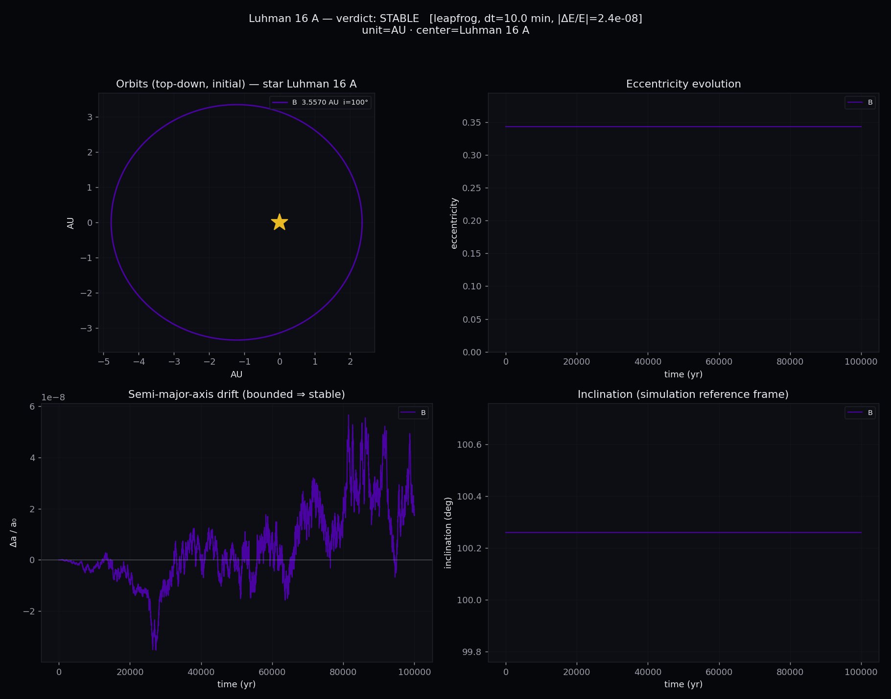
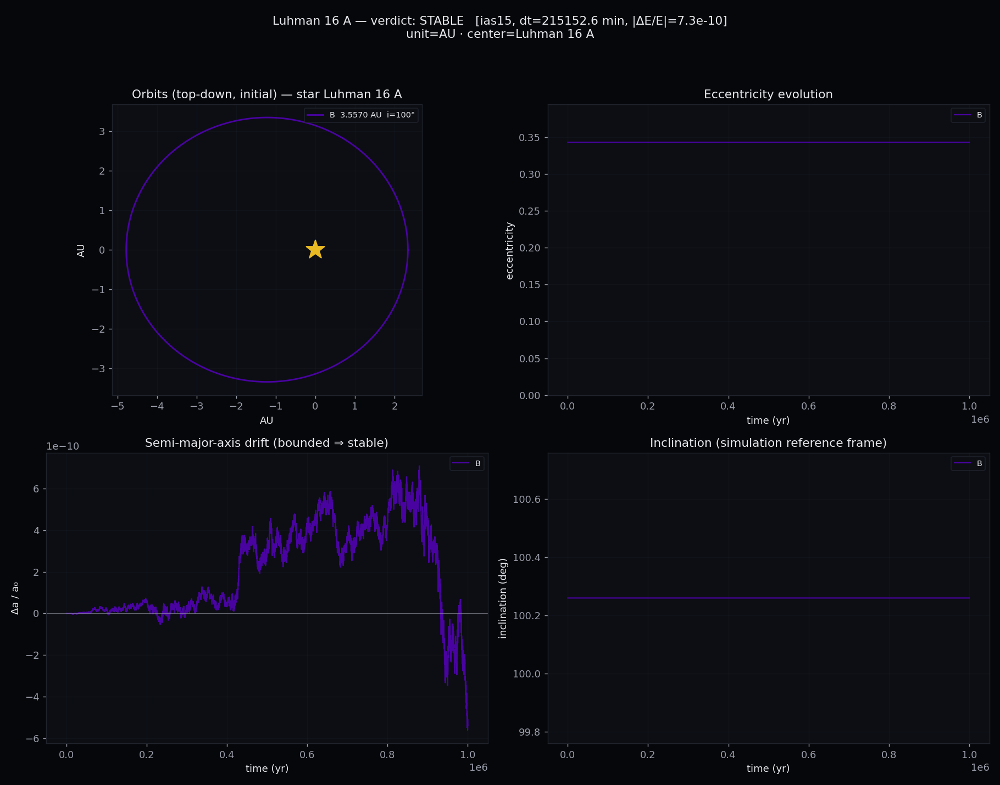

| leapfrog · 인게임 정합in-game fidelity | IAS15/TRACE + MEGNO · 카오스 판정chaos diagnosis | |
|---|---|---|
| 행성계Planet orbit 1 bodies | STABLE 10⁵ yr · |ΔE/E|=2.4e-8 | STABLE 10⁶ yr · MEGNO 2.00 |
행성계Planet orbit

leapfrog · 10⁵ yr
10⁵ yr · |ΔE/E|=2.4e-8 · 인터랙티브interactive · 3D 애니메이션3D animation

IAS15+MEGNO · 10⁶ yr
10⁶ yr · MEGNO 2.00 · 인터랙티브interactive